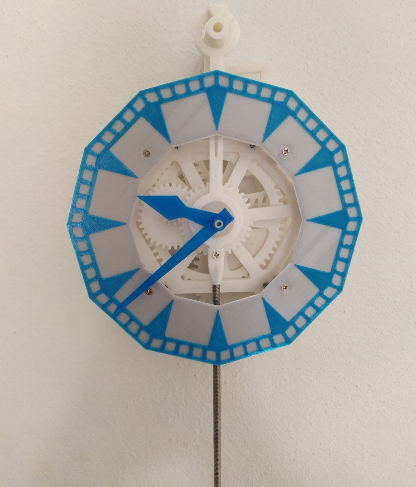
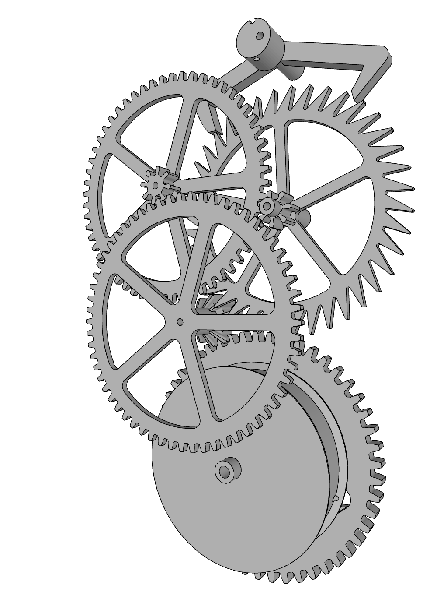
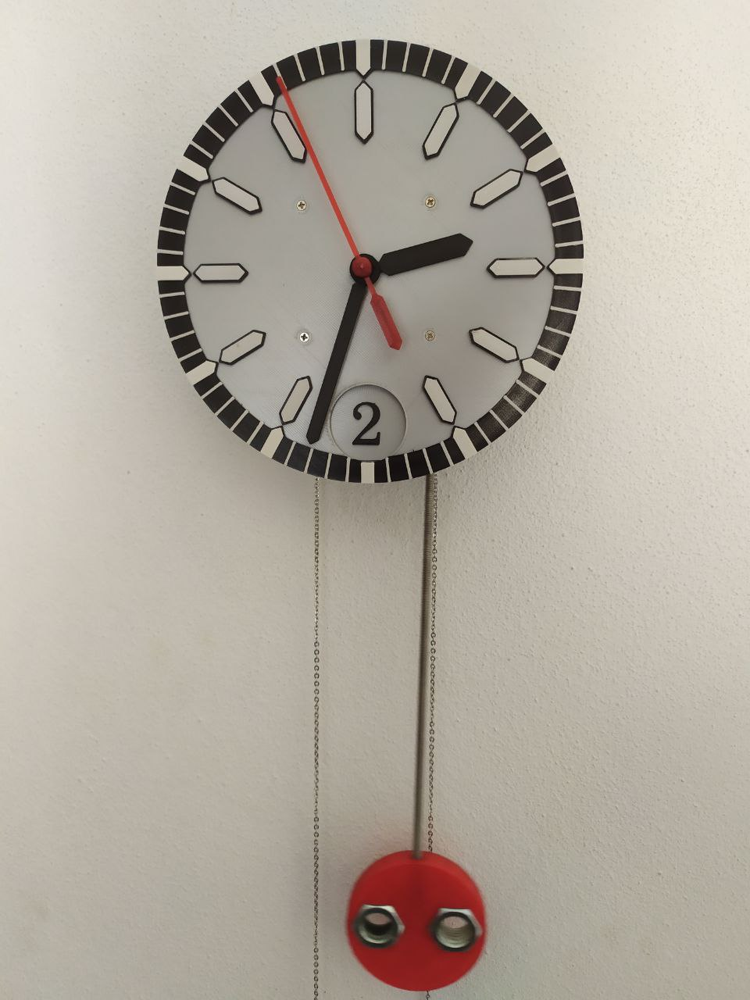

3D Printing
I like 3d printing in my free time. I have shared on Thingiverse some of my projects made with Fusion 360 and openscad. In this page you can find some other projects.South pointing chariot
It is a chariot with an horizontal index which always points at the same direction, no matter how it is oriented. The functioning is based on a differential mechanism that determines the chariot's orientation by computing the difference between the angles of the two wheels.First pendulum clock

It is completely made of 3d printed parts, steel rods and some screws. To design the gears I use my own code (openscad).
How does it work? On the left there are all the main gears of the clock. The lowest one makes one revolution every 5 hours. The rope is wrapped here. The next gear spins once each hour, in fact it is connected to the hour hand. Then it comes the top left gear and finally the top right one. This last gear has a different profile since it is the escapement wheel. It impulses the anchor (shown on the top) making it oscillating. The escapement makes one revolution every minute. The regularity of the timing is guaranteed by a pendulum (not shown) connected to the anchor. Video- Power reserve: 30 hours per meter
- Precision: +/-30 s per day
- Mass of the weight: 500 g
- Power consumption: 0.046 mW
- Period of the pendulum: 1.5 s
- Parts number: 63
Second pendulum clock

This clocks features a second hand advancing once every second. The window at six o'clock shows the hour in digital format. The precision is higher thanks to a gravity escapment. It is a mechanism that delivers to the pendulum the same amount of energy at every period regardless of the amount of torque that is applied to the escapement wheel. A drawback is that it draws more energy, hence a greater weight is needed. Video- Power reserve: 30 hours per meter
- Precision: +/-20 s per day
- Mass of the weight: 1250 g
- Power consumption: 0.115 mW
- Period of the pendulum: 1 s
- Parts number: 86